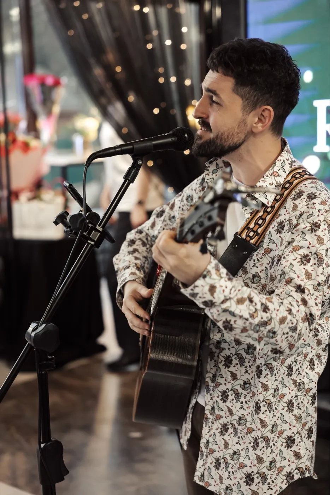
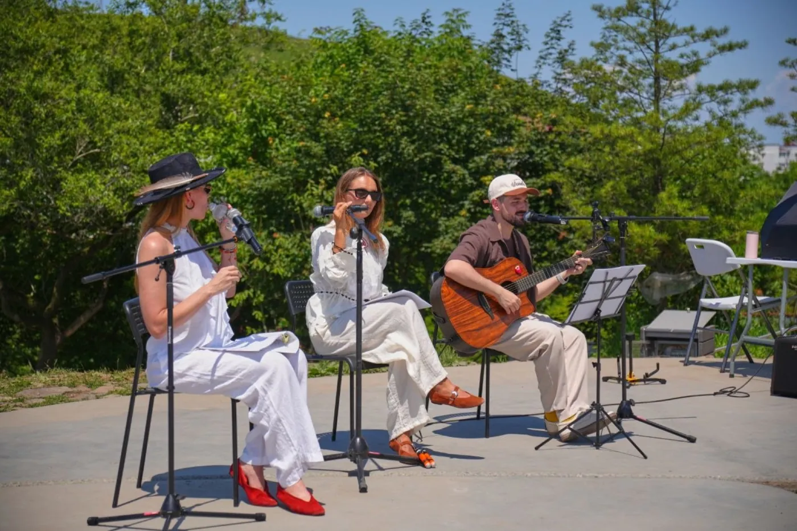

Свадьба
Акустика в welcome-зоне, пока собираются гости. А вечером — песни, которые знает весь стол.
Настраиваю гитару… 0%
Кореш с гитарой · Владивосток
Знакомые песни.
И сразу свои люди.
Любимые песни. Свои люди. Твой вечер.
Живая акустика на свадьбу, день рождения, корпоратив или вечер для своих.
знакомьтесь ↓
Юрий Поляков, для своих — просто Кореш с гитарой. Пою и играю на праздниках во Владивостоке.
Люблю вечера, когда знакомая песня возвращает к домашним посиделкам, двору или костру. Хочу, чтобы и у вас людям было тепло и легко друг с другом.
«Можно слушать, можно подпевать — как захочется»
Повод любой — главное, чтобы собрались свои. Выберите свой:
Акустика в welcome-зоне, пока собираются гости. А вечером — песни, которые знает весь стол.

Любимые песни именинника и гостей. Камерные посиделки или музыкальная часть большого праздника.

Спокойный фон на встрече гостей, акустическая пауза между частями программы и общее пение в конце вечера.
Домашние посиделки, дача или вечер у костра — песни, под которые хочется подпевать всей компанией.
Живые вечера в барах и кафе Владивостока. Ближайший — смотрите в афише ниже.
Не нашли свой праздник в списке? Напишите, что задумали, — придумаем, как это будет звучать.
Можно на весь вечер или только на его часть. Цены и программы →
Тут две записи с моих выступлений. Включайте звук — так понятнее, чем любые слова.
Приходите послушать, прежде чем звать к себе. Здесь — ближайшее подтверждённое выступление.
Все анонсы в Instagram ↗перекладывай полароиды → или тяни пальцем
Здесь будет отзыв гостей. Пришлите текст — вставлю.
Здесь будет отзыв гостей. Пришлите текст — вставлю.
Здесь будет отзыв гостей. Пришлите текст — вставлю.
Здесь будет отзыв гостей. Пришлите текст — вставлю.
Напишите, что за праздник и кто соберётся — дальше всё обсудим.